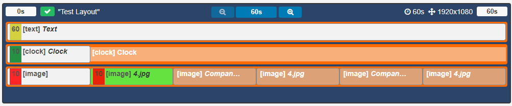
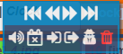

Layout Timeline (New Features for 2.0)
Each Region on a Layout has its own Playlist of content, which is shown in a specified order by the Player.
A Playlist can consist of a single item (such as a company logo), or multiple items (such as an image slideshow).
If you are using 1.8 please use the following link: Playlists.
A Region's Playlist is viewed/edited in the Layout Timeline window. Use the buttons to zoom through the timeline to see the full Playlist of content.

The Layout Timeline shows the duration of Widgets as well as the total duration of the Layout.
The timeline will show how each Regions assigned Widgets will play out. The greyed out entries indicate what will play when that items own duration is exceeded.
The above timeline tells us the following:
Text determines the duration of the Layout, as the longest running Region with a 60 second duration.
Clock has a set duration of 10 seconds but will remain on screen for 60 seconds (until the Text Widget has fully played out)
Image (1) will play for 10 seconds then Image (2) will play for 10 seconds, this will repeat twice more to remain on screen for 60 seconds (until the Text Widget has fully played out)
The Layout status indicator shows if a Layout is valid and will play when scheduled (green tick) Invalid Layouts (red cross) will be excluded from the Schedule and will not be played.
A Layout must contain at least one Region and each Region must contain at least one media item for it to be valid and play when scheduled.
Assigning Content
Media items that are assigned to Playlists are called Widgets which can be files stored in the Library as well as enabled Modules.
Use the toolbar on the Layout Designer to add Widgets or use the Library Search to add content that has already been uploaded to the Library.
Widgets that are available can be enabled/disabled by an Administrator in the Modules section of the CMS.
Deleting Widgets
Widgets can be deleted by clicking on the Widget to be removed and clicking on the red bin icon, on the bottom right of the toolbar.
Widget Actions
Each Widget assigned to the timeline has its own set of Actions. Access by right clicking on a Widgets from the Layout Timeline.

Use the arrows to move Widgets along the timeline to reorder the sequence.
Widgets can also be dragged along the timeline to reorder.
For further information regarding the available Actions, please see the Tools manual page.